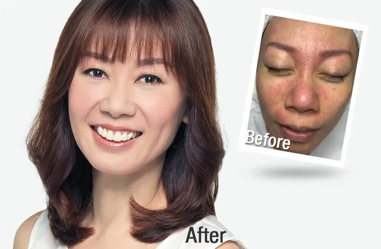
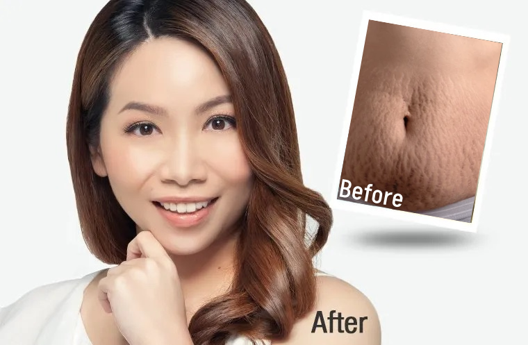
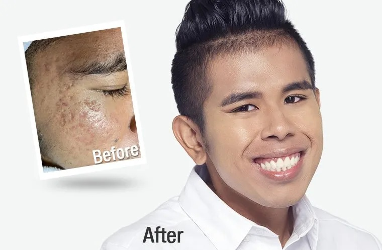
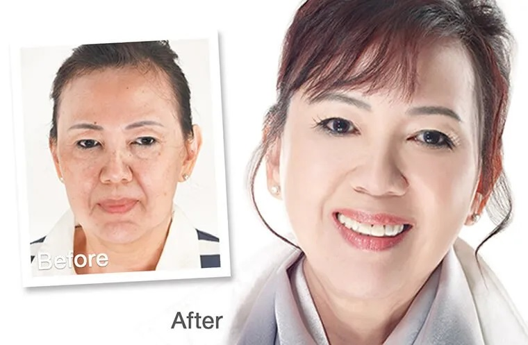

I've had dark eye circles and extremely sensitive skin from young. I had to be careful about the products I tried because of my sensitive skin. I tried so many products over the years to no avail. Thankfully I was recommended OASIS Skin Studio! After an in-depth consultation, I went through with 2 years of treatments. My dark eye circles are much lighter, and I know what to use for my sensitive skin!

After giving birth to my son, I went back to my usual gym routine and even did some diets but my body was still not what I was looking for. I was afraid of doing surgical procedure as I have heard the recovery time is very long. Luckily I came across OASIS Skin Studio and learnt of other options that did not include surgery. They explained the procedures in detail and it was perfect for me as a busy new mom. My skin is more elastic and I'm so happy with my body now!

The consultants at OASIS Skin Studio are very patient and professional in explaining my skin condition before giving me the most suitable treatment. They resolved my skin concerns, making me more confident at work. My friends and family have witnessed my skin’s transformation, and they complimented me on how great it looks now. So no matter what skin problems you are facing, OASIS Skin Studio can help you!

A photo I took with friends on vacation made me realise how many lines were on my face. The lines were so prominent, it's all I could see. I looked into different clinics, and thankfully chanced upon OASIS Skin Studio! Dr Terence gave me recommendations on treatments based on my skin and my concerns. I highly recommend getting your Botox at Mashu!